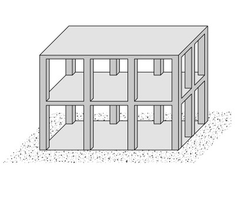
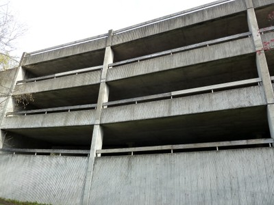
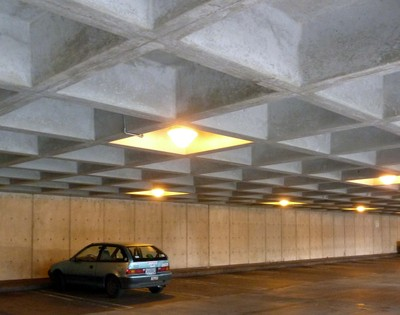
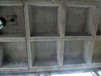

Flat slab/plate or waffle slab [LFLS]
Slabs and columns are constructed without beams. Unlike flat plates, flat slabs have capitals and/or drop panels at the tops of columns. (A capital is the upper portion of the column, which is usually of conical shape and larger in cross-section than the remaining portion of the column; a drop panel is a thickened portion of the slab in the area adjacent to a column.) Slab band systems, consisting of continuous wide beams spanning between the columns, also fall in this category due to specific beam-column connections (click here for more information). Primarily designed to resist gravity loads, these systems possess very limited ability to resist earthquake forces. If there are numerous walls they should be considered the lateral load-resisting system.

A simplified drawing of a flat slab / plate or waffle slab structure (adapted from: A. Charleson, Seismic Design for Architects, Architectural Press 2008, p64 fig. 5.2)

Partial section of a flat plate structure

Diagram showing examples of flat plate and flat slabs

Reinforced concrete flat plate system, Eugene, USA (S. Brzev)

Flat slab structure, Canada - note column capitals (S. Brzev)

Reinforced concrete flat slab system (note column capitals), Vancouver, Canada (S. Brzev)

Reinforced concrete flat slab with a column capital, London, UK (S. Brzev)

Flat slab, Australia - note drop panels beneath the slab (A. Charleson)

Slab band system, Canada (S. Brzev)

A reinforced concrete building with flat plate system under construction, Kenya (K. Jaiswal)

Reinforced concrete flat slab under construction, Canada (S. Brzev)

Reinforced concrete parking garage with flat slab system, USA (S. Brzev)

This reinforced concrete building has a waffle slab system, Vancouver, Canada (S. Brzev)

A reinforced concrete waffle slab, Eugene, USA (S. Brzev)